Chapter 4 Data Summary, EDA, & Initial Model Attempts
4.1 Introduction
I have three original datasets for analysis, both of which were collected from public websites between October 21 and 27, 2020.
- Yelp Reviews: 9,402 reviews for restaurants in Ottawa, which I believe includes all reviews available as of October 21. Each review includes:
- Business Name: The name the business is listed as operating under on Yelp. (Character)
- Reviewer Name: The screen name of the user who wrote the review. (Character)
- Review Date: The date the review was posted. (Character in mm/dd/yyyy format)
- Review Text: The full text of the review. (Character)
- Star Rating: The number of stars associated with the review (Integer from 1 to 5)
- Review URL: The URL from which the review was downloaded for traceability. (Character)
- Goodreads Reviews: 17,091 book reviews, culled from the first-page reviews of the “100 most-read books” in a number of genres. Each review includes:
- Book Title: The title of the book. (Character)
- Book Genre: The Goodreads-assigned genre of the book, e.g. “scifi” or “romance.” (Character)
- Book Author: The author of the book. (Character)
- Reviewer Name: The screen name of the user who wrote the review. (Character)
- Review Date: The date the review was posted. (Character in yyyy-mm-dd format)
- Review Text: The full text of the review. (Character)
- Star Text: Goodreads’ text equivalent for star ratings. (Character)
- Star Rating: The number of stars associated with the review (Integer from 1 to 5)
- Review URL: The URL from which the review was downloaded for traceability. (Character)
- Mountain Equipment Co-op (MEC) Reviews: 2,392 reviews for products for sale from MEC. Each review includes:
- Product Type: MEC’s categorization for the product (e.g. mittens, bicycle components.) (Character)
- Product Brand: The brand under which the product is marketed on MEC’s website. (Character)
- Product Name: The name of the product. (Character)
- Product ID: MEC’s internal product ID, used to call the API. (Character)
- Reviewer Name: The username of the review writer. (Character)
- Review Date: The date the review was left. (Character)
- Review Title: The title of the review. (Character)
- Review Text: The complete text of the review. (Character)
- Star Rating: The number of stars associated with the review. (Integer from 1 to 5)
In this section, I’ll take a look at these two datasets to get a feel for the star ratings and review text. I will consider each dataset in turn.
4.2 Goodreads
4.2.1 Star Ratings
The following histogram shows the overall distribution of star ratings. Reviews are overwhelmingly positive: there are move 5-star reviews than there are 1-, 2-, and 3-star reviews combined. This may make modeling more difficult, since there will be fewer low-star ratings to train our models.
reviews_gr %>%
ggplot() +
geom_bar(aes(x=rating_num)) +
theme_minimal() +
labs(title = "Goodreads Ratings: Rating Count, Overall",
x="Star Rating",
y=NULL)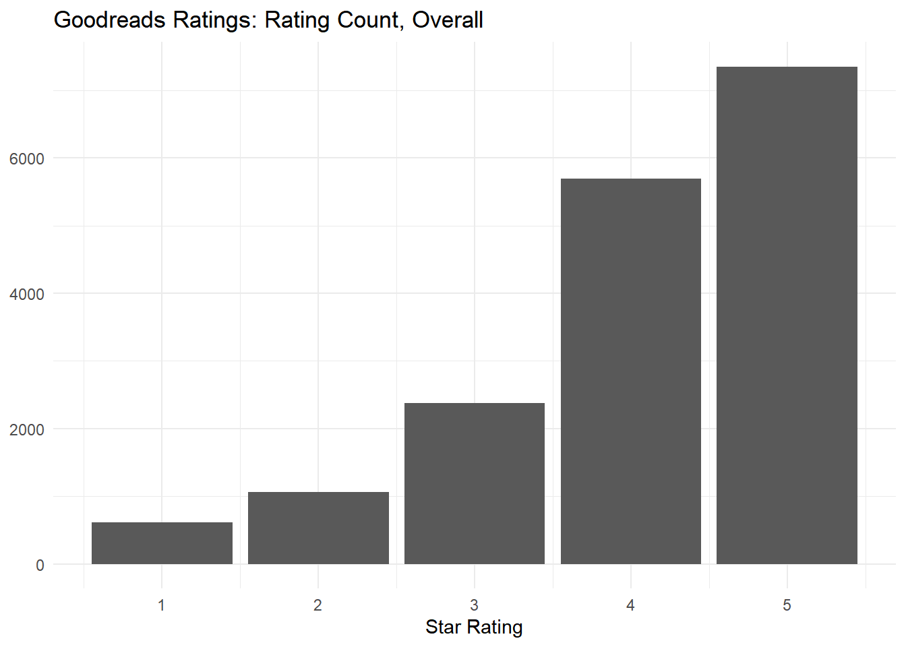
The next histogram shows that the pattern is broadly consistent across genres. There are some minor differences: for example, graphic-novel and mystery reviews have nearly the same number of 4- and 5-star ratings, whereas nonfiction and romance novels show markedly more 5-star reviews than 4-star reviews. But for present purposes the overall pattern looks largely the same–for example, there are no U-shaped distributions, or exponential-type distributions with the opposite skew.
reviews_gr %>%
ggplot() +
geom_bar(aes(x=rating_num)) +
theme_minimal() +
labs(title = "Goodreads Ratings: Rating Count by Genre",
x = "Star Rating",
y=NULL) +
facet_wrap(facets = vars(genre))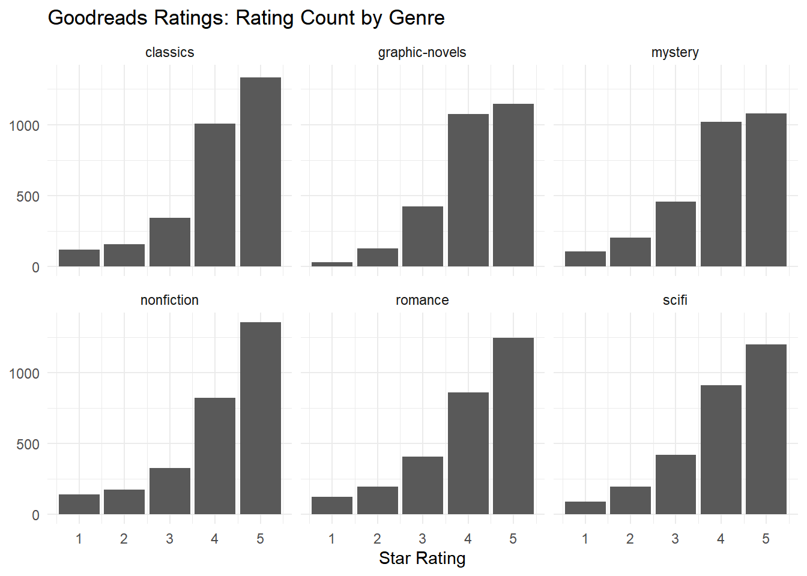
However, if we look at the level of individual books, the distributions look a bit more interesting. All the histograms are unimodal, but some of them peak at 3 or 4. (Poor Brian K. Vaughan.)
top_6_books <- reviews_gr %>%
group_by(book_title) %>%
summarise(n = n()) %>%
slice_max(n=6, order_by=n, with_ties=FALSE) %>%
pull(book_title) ## `summarise()` ungrouping output (override with `.groups` argument)reviews_gr %>%
filter(book_title %in% top_6_books) %>%
ggplot(aes(x = rating_num)) +
geom_histogram( binwidth=1, boundary=0.5, bins=5) +
facet_wrap(facets = vars(book_title)) +
theme_grey() +
labs(title = "Star Ratings for 6 of the Most-Reviewed Books",
subtitle = "Sampled randomly from across all genres.",
x = "Star Rating",
y = "# of Ratings")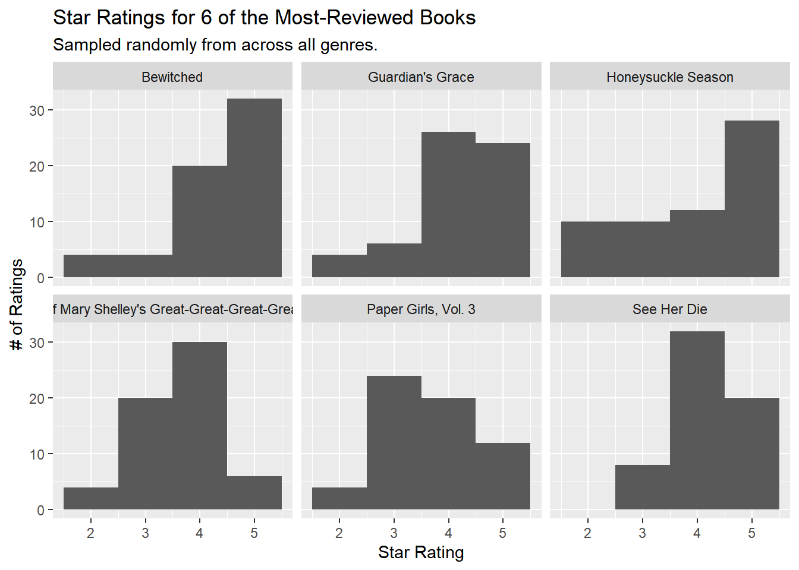
4.2.2 Word Count
Turning to word count, the following graph shows the cumulative density of word counts in our review dataset. In other words, as word count increases on the x-axis, the y-axis shows us how many reviews have at most that many words. I have counted words here using unnest_tokens() from the tidytext package (as per Tidy Text Mining). There may be an easier way, but this worked!
We find that most reviews are very short: about 15,000 are below 500 words, and they go as short as one word. Some reviews are quite long, and one stretches out past 3,500 words.
wordcounts_gr <- reviews_gr %>%
select(comment) %>%
rowid_to_column() %>%
tidytext::unnest_tokens(word, comment) %>%
group_by(rowid) %>%
summarise(n = n()) %>%
arrange(n) %>%
mutate(id = 1,
cumdist = cumsum(id))
wordcounts_gr %>%
ggplot() +
geom_point(aes(y=cumdist, x=n)) +
theme_minimal() +
labs(title ="Goodreads Reviews: Cumulative Distribution of Word-Lengths",
x = "Word Length",
y = "# of Reviews")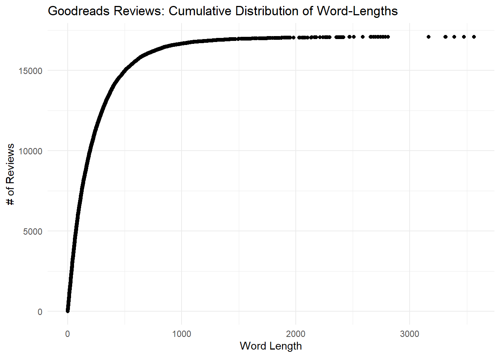
This distribution may also make our modeling task more difficult. With so many short reviews it’s unlikely that they will have many words in common, and so a lasso regression at the word level may not work very well.
However, short reviews may still be useful for sentiment analysis. The following table shows the five shortest reviews, since I wanted to check and make sure it wasn’t a data error. One reviewer left a single word: “SUCKS.” Concise and informative.
wordcounts_gr %>%
arrange(n) %>%
head(5) %>%
pull(rowid) %>%
slice(reviews_gr, .) %>%
select(book_title,author_name, rating_num, comment) %>%
mutate(across(where(is.character), str_trunc, width=40)) %>%
knitr::kable(booktabs = T,
col.names = c("Book Title", "Book Author", "Stars", "Review"),
align = c("l","l","c","l")) | Book Title | Book Author | Stars | Review |
|---|---|---|---|
| The Alchemist | Paulo Coelho | 1 | SUCKS. |
| The Mysterious Affair at Styles | Agatha Christie | 5 | Classic |
| Siddhartha | Hermann Hesse | 2 | Eh. |
| Treasure Island | Robert Louis Stevenson | 5 | ARRRRRRRRRRRRRRRRRRRRRRRRRRRRRRRRRRRR… |
| Logan Likes Mary Anne! | Gale Galligan | 4 | cool |
4.2.3 Reviewers
The following histogram shows that while most Goodreads users posted only a handful of reviews in our dataset, some posted over 50.
## `summarise()` ungrouping output (override with `.groups` argument)reviewers_gr %>%
ggplot(aes(x=n)) +
geom_histogram() +
theme_minimal() +
labs(title = "Goodreads: Distribution of Reviews per User",
x = "# of Reviews",
y = "# of Users") ## `stat_bin()` using `bins = 30`. Pick better value with `binwidth`.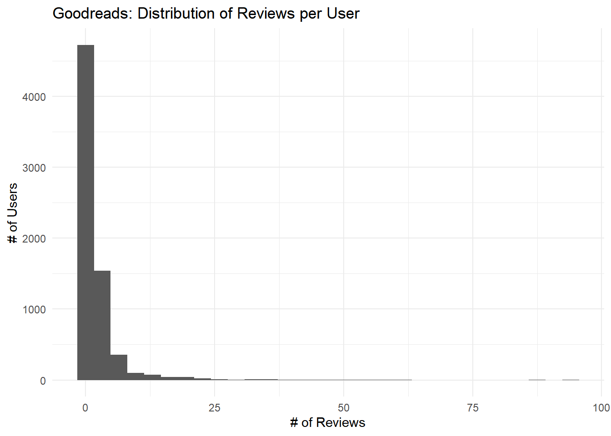
Looking at the following table, we can see that the top 10 reviewers all posted over 50 reviews, and one posted 95.
## # A tibble: 11 x 2
## names n
## <chr> <int>
## 1 Ahmad Sharabiani 95
## 2 Lisa 89
## 3 Matthew 63
## 4 jessica 61
## 5 Sean Barrs 59
## 6 Emily May 56
## 7 Michelle 53
## 8 Jennifer 52
## 9 Elyse Walters 51
## 10 Melissa <U+2665> Dog/Wolf Lover <U+2665> Martin 50
## 11 Nilufer Ozmekik 50Out of curiosity (and as a check on our data quality), let’s investigate the 95 reviews from our top poster, Ahmad Sharabiani:
reviews_gr %>%
filter(names == "Ahmad Sharabiani") %>%
select(book_title, author_name, rating_num, comment) %>%
mutate (comment = str_trunc(comment, 80)) %>%
arrange(desc(author_name)) %>%
slice_head(n=10) %>%
knitr::kable(col.names = c("Book Title", "Book Author", "Stars", "Review"),
align = c("l","l","c","l"))| Book Title | Book Author | Stars | Review |
|---|---|---|---|
| Romeo and Juliet | William Shakespeare | 5 | Romeo and Juliet = The Tragedy of Romeo and Juliet, William ShakespeareRomeo … |
| Othello | William Shakespeare | 4 | Othello = The Tragedy of Othello, William ShakespeareOthello (The Tragedy of … |
| Othello | William Shakespeare | 5 | The Tragedy of Othello, The Moor of Venice, William ShakespeareOthello is a t… |
| Lord of the Flies | William Golding | 4 |
|
| A Room of One’s Own | Virginia Woolf | 4 | A Room of One’s Own, Virginia WoolfA Room of One’s Own is an extended essay b… |
| Beowulf | Unknown | 5 | Beowulf, Anonymous Anglo-Saxon poetBeowulf is an Old English epic poem consis… |
| In Cold Blood | Truman Capote | 4 | In Cold Blood, Truman CapoteThis article is about the book by Truman Capote. … |
| The Bluest Eye | Toni Morrison | 4 |
|
| The Bell Jar | Sylvia Plath | 4 |
|
| The Shining | Stephen King | 4 | The Shining (The Shining #1), Stephen KingThe Shining is a horror novel by Am… |
Something looks a bit suspicious here. First, many books have more than one review (for example, Othello has 2 and The Catcher in the Rye has 3). Second, the reviews all seem to begin with the title of the book and a factual summary without much personality.
If we do a Google search for the opening text of Ahmad’s review for Farenheit 451, “Fahrenheit 451 is a dystopian novel by American”, we find that exact text in the first line of the book’s Wikipedia page. Google also suggests we look at Farenheit 451’s Goodreads page, which includes Ahmad’s review.
If we look at Ahmad’s review more closely, we see that it includes an English-language summary and then a lot of text in a non-Latin alphabet.
reviews_gr %>%
filter(names == "Ahmad Sharabiani" & book_title == "Fahrenheit 451") %>%
pull(comment) %>%
str_trunc(700)## [1] "Fahrenheit 451, Ray BradburyFahrenheit 451 is a dystopian novel by American writer Ray Bradbury, published in 1953. Fahrenheit 451 is set in an unspecified city at an unspecified time in the future after the year 1960.Guy Montag is a \"fireman\" employed to burn houses containing outlawed books. He is married but has no children. One fall night while returning from work, he meets his new neighbor, a teenage girl named Clarisse McClellan, whose free-thinking ideals and liberating spirit cause him to question his life and his own perceived happiness. Montag returns home to find that his wife Mildred has overdosed on sleeping pills, and he calls for medical attention. ...<U+062A><U+0627><U+0631><U+06CC><U+062E> <U+0646><U+062E><U+0633><U+062A><U+06CC><U+0646> <U+062E><U+0648><U+0627><U+0646><U+0634>: <U+0631><U+0648>..."Google Translate tells me the language is Persian, and the translated text includes a brief note–“Date of first reading: The third day of February 1984”–and then another summary of the book written in Persian. The text does not seem to have any actual review or opinion in it.
I’m not sure what’s going on here, but we have learned that: * Some users post a large number of reviews; * Some users post useless/non-review reviews, e.g. copy/pasting text from Wikipedia; and, * At least one super-poster posts such reviews.
This bears looking into more, since reviews that are copy/pasted from Wikipedia are unlikely to have any predictive value at all and may need to be identified and filtered out in pre-processing. These users may even be bots, especially given the short timeframe for the Goodreads dataset (see below).
4.3 Yelp
4.3.1 Star Ratings
Repeating the process for Yelp, this histogram shows the distribution of star ratings. Reviews are again very positive and show a similar distribution.
reviews_yelp %>%
ggplot() +
geom_bar(aes(x=rating_num)) +
theme_minimal() +
labs(title = "Yelp Ratings by Star",
x="Star Rating",
y=NULL)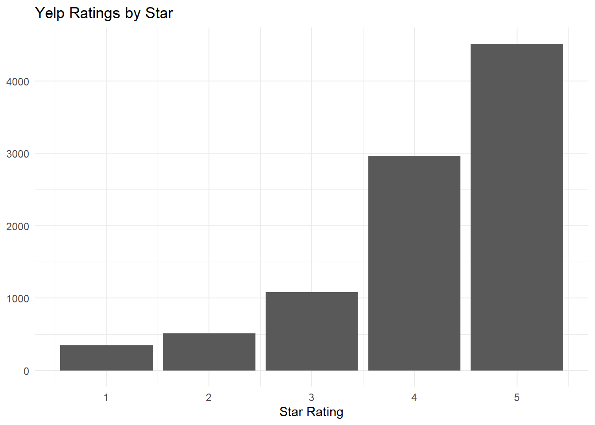
The Yelp data didn’t include restaurant type, so we can’t do a genre-specific investigation as we did for Goodreads.
However, we can repeat the analysis where we look at star distributions for the top 6 businesses. Overall the distributions look the same, but here, finally, we get the first hint of bimodality in our distributions. Two restaurants, Sansotei Ramen and Shawarma Palace, have slight second peaks at 1 star. However, the overall story is the same and this could arguably be random fluctuations.
top_6_restos <- reviews_yelp %>%
group_by(business) %>%
summarise(n = n()) %>%
slice_max(n=6, order_by=n, with_ties=FALSE) %>%
pull(business) ## `summarise()` ungrouping output (override with `.groups` argument)reviews_yelp %>%
filter(business %in% top_6_restos) %>%
ggplot(aes(x = rating_num)) +
geom_histogram( binwidth=1, boundary=0.5, bins=5) +
facet_wrap(facets = vars(business)) +
theme_grey() +
labs(title = "Star Ratings for 6 of the Most-Reviewed Restaurants",
x = "Star Rating",
y = "# of Ratings")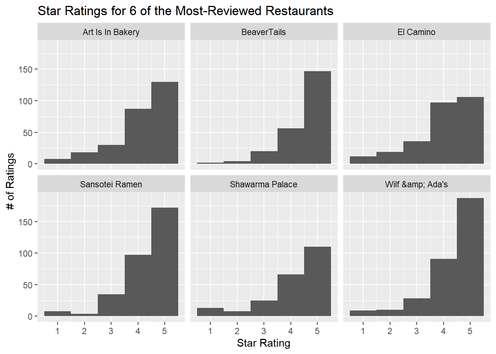
4.3.2 Word Count
As with the Goodreads data, most Yelp reviews are very short.
wordcounts_yelp <- reviews_yelp %>%
select(comment) %>%
rowid_to_column() %>%
tidytext::unnest_tokens(word, comment) %>%
group_by(rowid) %>%
summarise(n = n()) %>%
arrange(n) %>%
mutate(id = 1,
cumdist = cumsum(id))
wordcounts_yelp %>%
ggplot() +
geom_point(aes(y=cumdist, x=n)) +
theme_minimal() +
labs(title ="Yelp Reviews: Cumulative Distribution of Word-Lengths",
x = "Word Length",
y = "# of Reviews")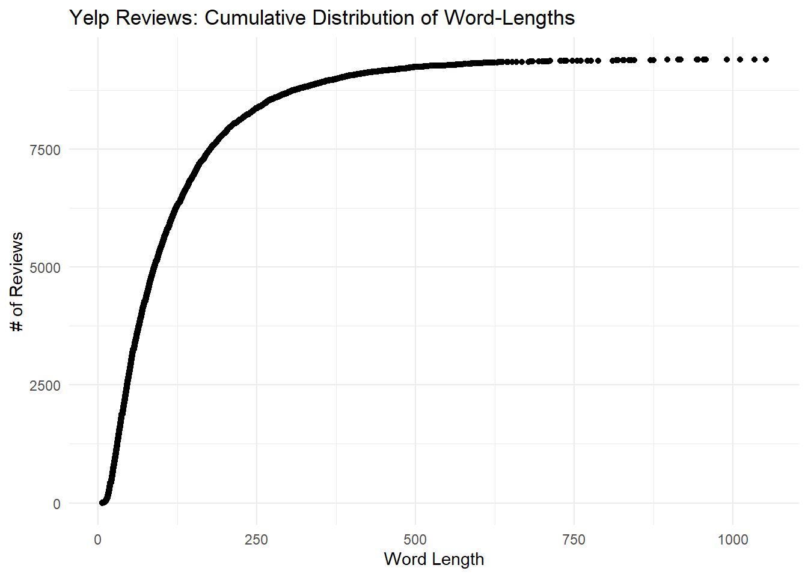
And again, let’s review the five shortest Yelp reviews in the table below. They seem to be genuine good-faith reviews that include helpful words, and so may be workable for our models.
wordcounts_yelp %>%
arrange(n) %>%
head(5) %>%
pull(rowid) %>%
slice(reviews_yelp, .) %>%
select(business,rating_num,comment) %>%
mutate(across(where(is.character), str_trunc, width=40)) %>%
knitr::kable(booktabs = T,
col.names = c("Business", "Stars", "Review"),
align = c("l","c","l")) | Business | Stars | Review |
|---|---|---|
| Kallisto Greek Restaurant | 4 | Great takeout, service, ambiance and … |
| Bite Burger House | 4 | Delicious, juicy, interesting burgers… |
| BeaverTails | 4 | BeaverTails pastry..no words needed….. |
| Saigon Boy Noodle House | 3 | Very decent pho shop, well priced. |
| Supreme Kabob House | 5 | Excellent Afghani Food and Good Space |
4.3.3 Reviewers
The following histogram shows how many reviews were posted be users. Its distribution is similar to the one we found for Goodreads: most users posted only a few times, but some posted over 50.
## `summarise()` ungrouping output (override with `.groups` argument)reviewers_yelp %>%
ggplot(aes(x=n)) +
geom_histogram() +
theme_minimal() +
labs(title = "Yelp: Distribution of Reviews per User",
x = "# of Reviews",
y = "# of Users") ## `stat_bin()` using `bins = 30`. Pick better value with `binwidth`.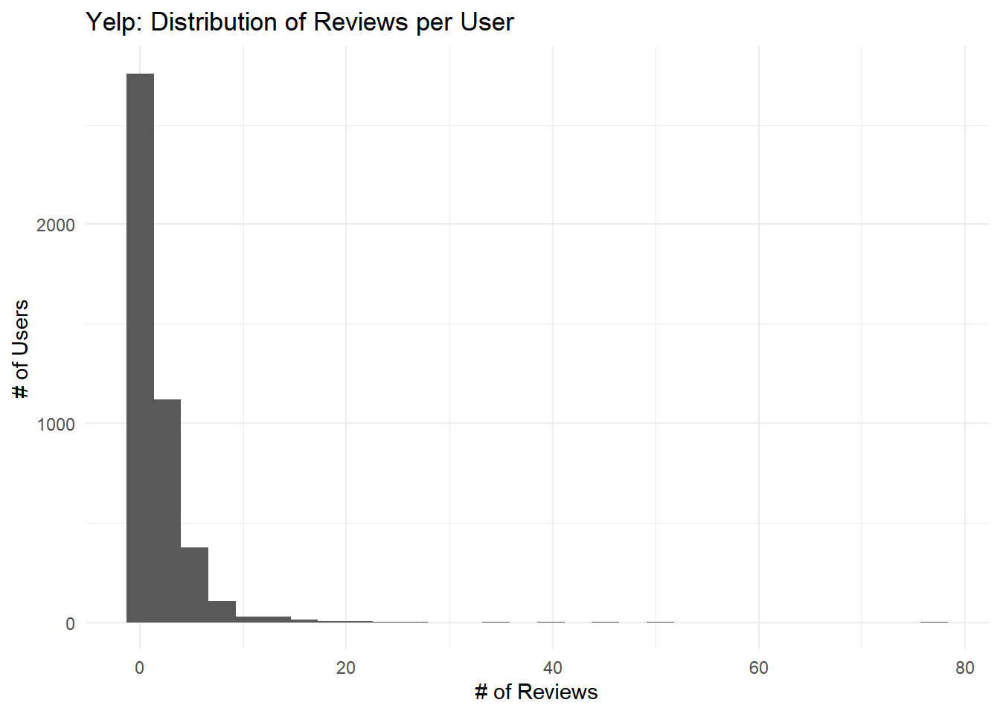
Looking at our top-10 Yelp reviewers, the drop-off is quite a bit sharper than it was for Goodreads.
reviewers_yelp %>%
top_n(10, wt = n) %>%
knitr::kable(col.names = c("Name", "# Reviews"),
align = c("l","c"))| Name | # Reviews |
|---|---|
| Jennifer P. | 78 |
| Amelia J. | 77 |
| Dawn M. | 51 |
| Samantha M. | 44 |
| Eric B. | 41 |
| Amanda B. | 35 |
| Coy W. | 34 |
| Drew K. | 27 |
| Spike D. | 25 |
| Amy B. | 23 |
The following table shows the first 10 reviews by our top reviewer, Jennifer P., in chronological order.
reviews_yelp %>%
filter(name == "Jennifer P.") %>%
select(date, business, rating_num, comment) %>%
mutate(date = lubridate::mdy(date),
comment = str_trunc(comment, 70)) %>%
arrange(date) %>%
slice_head(n=10) %>%
knitr::kable(booktabs = TRUE,
col.names = c("Date", "Business", "Stars", "Review"),
align = c("l","l","c","l"))| Date | Business | Stars | Review |
|---|---|---|---|
| 2012-06-22 | Mr B’s-March House Restaurant | 4 | I never would have tried this restaurant had it not been recommende… |
| 2012-07-04 | Alirang Restaurant | 3 | I was here last week with my husband, my brother and his girlfriend… |
| 2013-01-24 | Corazón De Maíz | 4 | I can&#39;t believe that I walk by this place all the time, but… |
| 2013-06-24 | 222 Lyon Tapas Bar | 5 | This place is absolutely delicious, but man is it ever expensive! … |
| 2013-09-02 | Benny’s Bistro | 5 | I was visiting from out of town for my best friend&#39;s weddin… |
| 2013-09-20 | Art Is In Bakery | 4 | My husband and I were here for their Sunday Brunch recently with an… |
| 2013-11-22 | Gezellig | 3 | Sorry, I&#39;m going to have to downgrade this place to 3 stars… |
| 2013-12-30 | Thai Coconut | 4 | I went here with my husband today for the lunch buffet. It was gre… |
| 2014-05-07 | Bite Burger House | 4 | I had an early dinner here with my husband recently. Bite Burger H… |
| 2014-07-07 | Pookies Thai | 4 | I went here for dinner recently with my husband on a whim. We&… |
These all seem to be good-faith restaurant reviews. And since this user has been active since 2012, to write 78 reviews they would have to write fewer than one per month. From this brief glance, we have no reason to think that Yelp users are posting insincere reviews.
However, I note that the reviews have some html junk in them: &#39; instead of an apostrophe, for example. These will need to be cleaned up before we use the data.
4.4 Mountain Equipment Co-op (MEC)
4.4.1 Star Ratings
This histogram shows the distribution of star ratings for MEC reviews. It’s broadly similar to the Yelp and Goodreads reviews, except there is a small second peak at 1 star.
reviews_mec %>%
ggplot() +
geom_bar(aes(x=rating_num)) +
theme_minimal() +
labs(title = "MEC Ratings: Rating Count, Overall",
x="Star Rating",
y=NULL)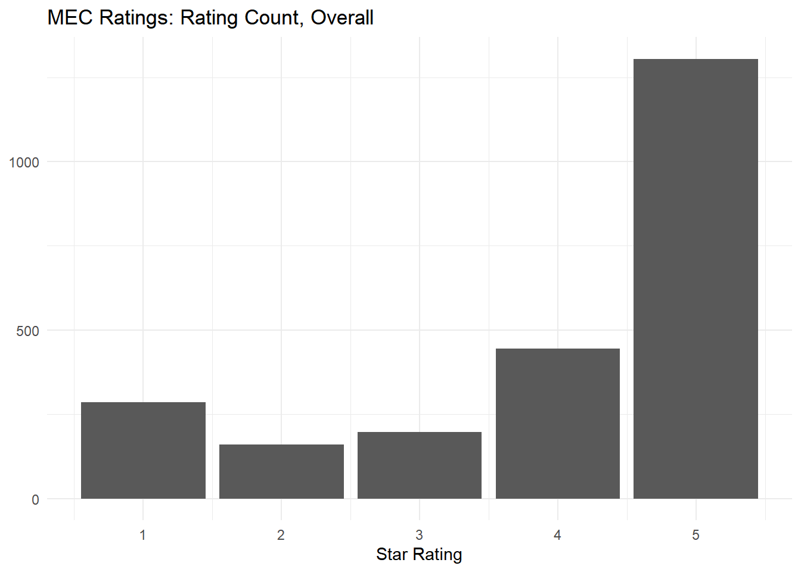
If we break out the reviews by category, we can see that they all follow the same kind of exponential distribution except bicycle components.
reviews_mec %>%
ggplot() +
geom_bar(aes(x=rating_num)) +
theme_minimal() +
labs(title = "MEC Ratings: Rating Count by Product Category",
x="Star Rating",
y=NULL) +
facet_wrap(~product_type)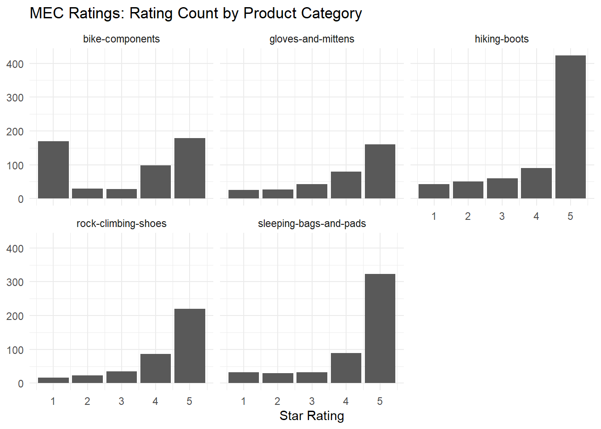
We can break the bicycle compoenents category down further by individual product. The facet wrap is messy, but we can clearly see that there are a few produts with anomalous spikes in 1-star ratings, and that ecah of these products has the word “tube” in the title.
reviews_mec %>%
filter(product_type=="bike-components") %>%
ggplot() +
geom_bar(aes(x=rating_num)) +
theme_minimal() +
labs(title = "MEC Ratings: Rating Count by Product",
subtitle = "Bicycle Components",
x="Star Rating",
y=NULL) +
facet_wrap(~product_name)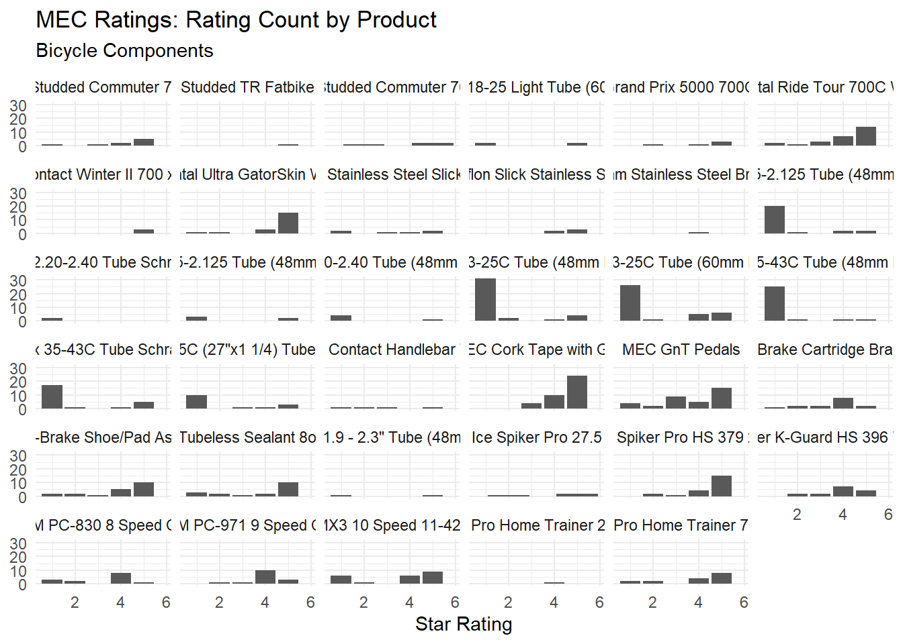
We can conclude that MEC’s reviews follow the same pattern as Yelp and Goodreads overall, except for bicycle inner tubes which have unusually high numbers of 1-star reviews. We should keep this in mind when modeling using the MEC data.
4.4.2 Word Counts
Most MEC reviews are very short. They look to be shortest of all three datasets, both in terms of the shape of the dsitribution and the maximum review lengths. We will see this below in a later section when we plot all three distributions at once.
wordcounts_mec <- reviews_mec %>%
select(comment) %>%
rowid_to_column() %>%
tidytext::unnest_tokens(word, comment) %>%
group_by(rowid) %>%
summarise(n = n()) %>%
arrange(n) %>%
mutate(id = 1,
cumdist = cumsum(id))
wordcounts_mec %>%
ggplot() +
geom_point(aes(y=cumdist, x=n)) +
theme_minimal() +
labs(title ="MEC Reviews: Cumulative Distribution of Word-Lengths",
x = "Word Length",
y = "# of Reviews")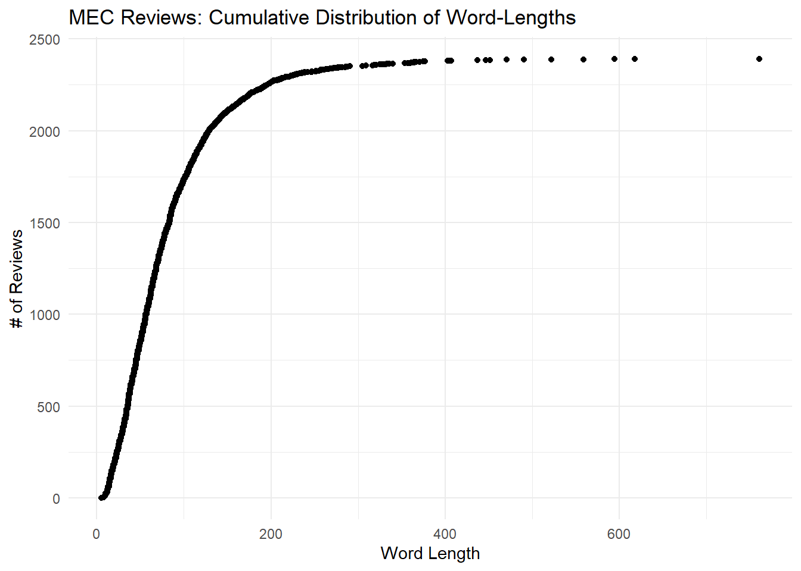
If we look at the five shortest reviews, they all seem to be short but legitimate so we can be comfortable with our data quality.
wordcounts_mec %>%
arrange(n) %>%
head(5) %>%
pull(rowid) %>%
slice(reviews_mec, .) %>%
select(product_name,rating_num,comment) %>%
mutate(across(where(is.character), str_trunc, width=40)) %>%
knitr::kable(booktabs = T,
col.names = c("Business", "Stars", "Review"),
align = c("l","c","l"))| Business | Stars | Review |
|---|---|---|
| MEC 700 x 23-25C Tube (48mm Presta Va… | 2 | Lasted 1 season basically disposable |
| Smartwool Liner Gloves - Unisex | 5 | Love smartwool products, the gloves a… |
| Scarpa Moraine Mid Gore-Tex Light Tra… | 5 | light, comfortable and good looking! … |
| Scarpa Moraine Mid Gore-Tex Light Tra… | 4 | good pair of shoes. lightweight but … |
| La Sportiva TC Pro Rock Shoes - Unisex | 5 | Flat stiff shoe. Perfect for vertical… |
4.4.3 Reviewers
As with the other datasets, it first appears that most users leave only a few reviews but there are some “super-users” who leave quite a few.
## `summarise()` ungrouping output (override with `.groups` argument)reviewers_mec %>%
ggplot(aes(x=n)) +
geom_histogram() +
theme_minimal() +
labs(title = "MEC: Distribution of Reviews per User",
x = "# of Reviews",
y = "# of Users") ## `stat_bin()` using `bins = 30`. Pick better value with `binwidth`.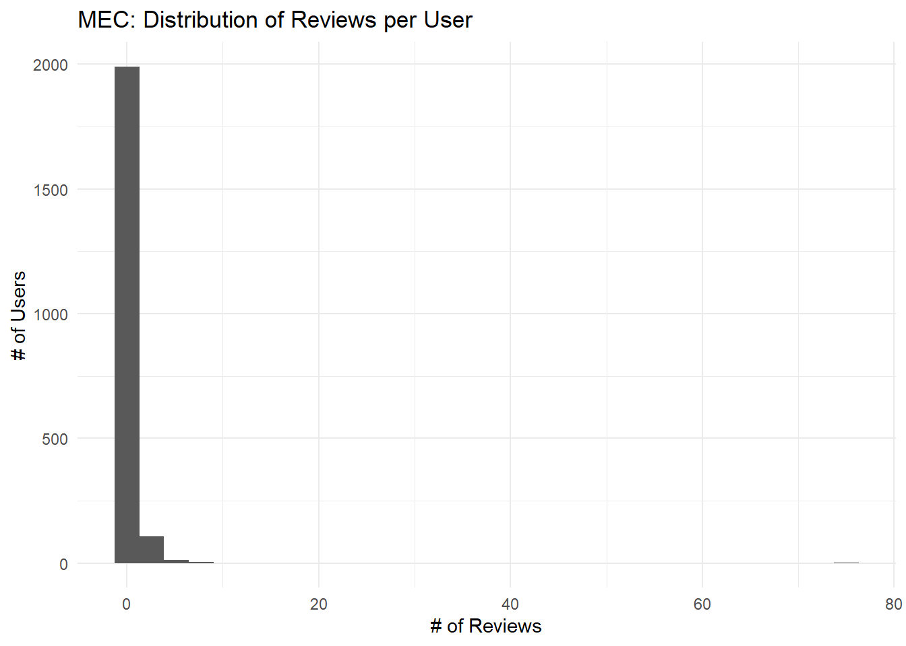
Upon closer inspection, however, we see that our largest “user” is NA, suggesting that most users leave a smallish number of reviews but that some leave reviews anonymously.
reviewers_mec %>%
top_n(10, wt = n) %>%
knitr::kable(col.names = c("Name", "# Reviews"),
align = c("l","c"))%>%
kableExtra::kable_styling(bootstrap_options = "striped")| Name | # Reviews |
|---|---|
| NA | 76 |
| Matt | 9 |
| Chris | 8 |
| Mike | 8 |
| Ryan | 7 |
| John | 6 |
| Mark | 6 |
| VicCyclist40 | 6 |
| Dave | 5 |
| Paul | 5 |
| Steph | 5 |
The following table shows all 9 reviews by our top reviewer, Matt, in chronological order.
reviews_mec %>%
filter(user_name == "Matt") %>%
select(date, product_name, rating_num, comment) %>%
mutate(comment = str_trunc(comment, 70)) %>%
arrange(date) %>%
knitr::kable(booktabs = TRUE,
col.names = c("Date", "Product", "Stars", "Review"),
align = c("l","l","c","l"))| Date | Product | Stars | Review |
|---|---|---|---|
| 2016-02-29 04:59:40 | Black Diamond Mercury Mitts - Men’s | 3 | I bought these to replace the BD mercury mitts I purchased 6 years … |
| 2017-08-23 20:16:05 | MEC Mallard -5C Down Sleeping Bag - Unisex | 5 | I usually use a bag with a hood but found my self feeling confined … |
| 2017-11-14 03:28:48 | Oboz Bridger Mid Bdry Hiking Shoes - Men’s | 5 | Bought these boots two years ago. Hiked up Sulphur Skyline in Jaspe… |
| 2018-01-20 21:55:36 | MEC Goto Fleece Gloves - Unisex | 5 | These are casual use gloves for me and I wear them around town when… |
| 2018-02-01 11:13:17 | Black Diamond Guide Gloves - Men’s | 2 | Very warm, but not very durable. Considering the cost, these gloves… |
| 2018-07-24 20:03:37 | MEC Creekside 0C Sleeping Bag - Unisex | 1 | I’ve used this bag twice and froze both times at temperatures betwe… |
| 2019-05-15 04:00:46 | Scarpa Kailash Trek Gore-Tex Hiking Boots - Men’s | 5 | While i have so far only logged one day of hiking in my new Scarpas… |
| 2019-06-11 00:19:21 | La Sportiva Finale Rock Shoes - Men’s | 5 | I’m relatively new to the sport and decided to go with these as my … |
| 2019-08-25 17:47:30 | MEC Reactor 10 Double Sleeping Pad - Unisex | 5 | I recently bought this mattress for car camping and it is incredibl… |
This looks like a legit usage pattern with real reviews. However, we should also spot-check some reviews assigned to NA:
reviews_mec %>%
filter(is.na(user_name)) %>%
select(date, product_name, rating_num, comment) %>%
slice_head(n=10) %>%
mutate(comment = str_trunc(comment, 70)) %>%
arrange(date) %>%
knitr::kable(booktabs = TRUE,
col.names = c("Date", "Business", "Stars", "Review"),
align = c("l","l","c","l"))| Date | Business | Stars | Review |
|---|---|---|---|
| 2012-08-05 02:01:07 | SRAM PC-971 9 Speed Chain | 3 |
I used this chain on both my road and mountain bikes. It’s done fi… |
| 2013-09-23 01:57:46 | MEC 700 x 23-25C Tube (48mm Presta Valve) | 1 | Don’t waste your time with these. I’ve been through 4 this season a… |
| 2014-05-12 17:00:57 | MEC 700 x 23-25C Tube (48mm Presta Valve) | 1 | This is the third of these tubes I have had split down the seam. Th… |
| 2014-06-25 03:13:43 | MEC 700 x 23-25C Tube (60mm Presta Valve) | 1 | I’m afraid that I have to add my voice to the chorus of negative re… |
| 2014-10-04 02:21:33 | MEC 700 x 23-25C Tube (48mm Presta Valve) | 4 | I’m not sure where this chorus of negative reviews is coming from. … |
| 2014-10-25 21:28:29 | MEC 700X32-35C (27"x1 1/4) Tube Schrader Valve | 1 | I’ve bought two of these tubes and had to return both of them, I wi… |
| 2015-08-06 21:25:01 | MEC 700X32-35C (27"x1 1/4) Tube Schrader Valve | 3 | Have used three of these over a couple of years and the only one th… |
| 2015-11-16 19:45:33 | MEC 700 x 23-25C Tube (48mm Presta Valve) | 1 | I ride ten kilometres to work and ten kilometres home from work eve… |
| 2016-02-27 13:47:26 | SRAM PC-971 9 Speed Chain | 4 | I have been using PC971 chains for many years. Currently I do most … |
| 2016-06-22 21:38:52 | SRAM PC-971 9 Speed Chain | 4 | The chain that I have purchased from MEC is really a good chain. I … |
These also look like legitimate reviews, so it’s possible that these were legitimately left anonymously or that there was a data-parsing issue with the API.
4.5 Comparing Goodreads, MEC, and Yelp
4.5.1 Star Ratings
When we compare Yelp and Goodreads reviews by the number of star ratings, the distributions look very similar. There are fewer Yelp reviews, but the shape of the distribution looks like a scaled-down version of the Goodreads distribution. There are far fewer MEC reviews, and it looks like the distribution has a slight second peak at 1 star.
## `summarise()` ungrouping output (override with `.groups` argument)## `summarise()` ungrouping output (override with `.groups` argument)## `summarise()` ungrouping output (override with `.groups` argument)## Joining, by = "rating_num"## Joining, by = "rating_num"compare_long <- compare %>%
pivot_longer(cols = c("gr", "yp","mc"), names_to = "source", values_to = "num")
compare_long %>%
ggplot() +
geom_col(aes(x=rating_num, y=num, group=source, fill=source), position = "dodge") +
theme_minimal() +
labs(title = "Goodreads, MEC, and Yelp Reviews: Total Counts by Rating",
x = "Star Rating",
y = "n",
fill = "Source") +
scale_fill_viridis_d(labels = c("Goodreads", "MEC", "Yelp"))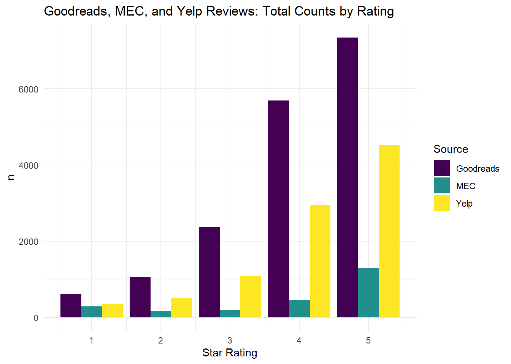
To get a better feel for how the distributions vary, we can plot the proportional breakdown of star reviews for each source. The following plot shows that the Goodreads and Yelp distributions track each other somewhat closely but the MEC reviews are quite different.
compare_long %>%
group_by(source) %>%
mutate(prop = num / sum(num)) %>%
ggplot() +
geom_col(aes(x=rating_num, y=prop, group=source, fill=source), position = "dodge") +
theme_minimal() +
labs(title = "Goodreads, MEC, and Yelp Reviews: Proportion of Counts by Rating",
x = "Star Rating",
y = "Proportion",
fill = "Source") +
scale_fill_viridis_d(labels = c("Goodreads", "MEC", "Yelp"))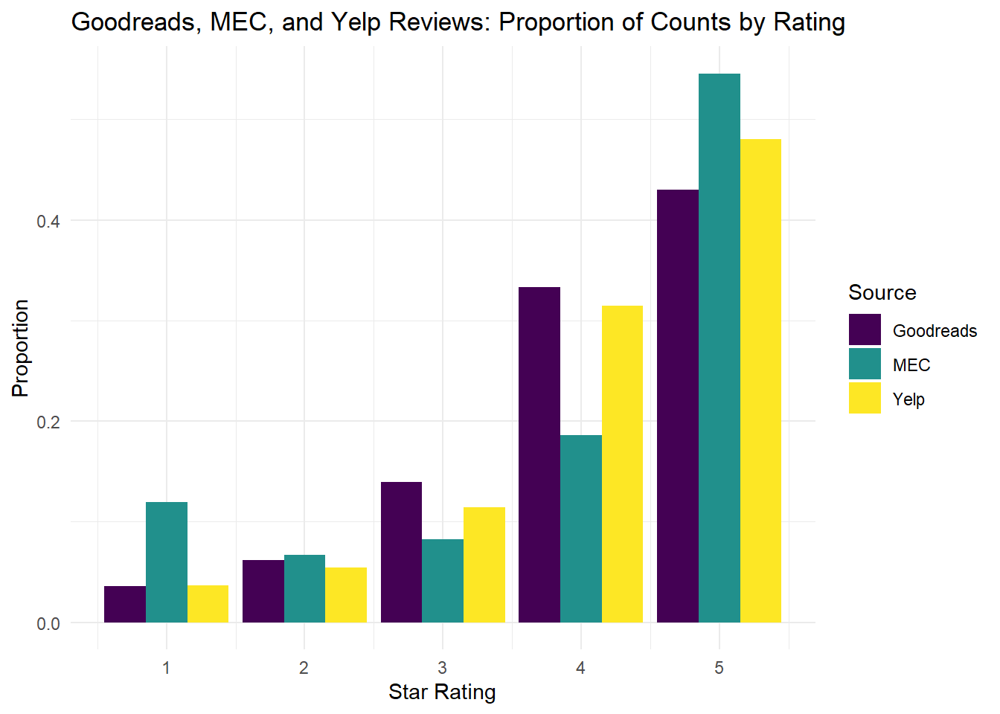
We can use a standard Pearson’s Chi-squared test to see if the Goodreads and Yelp distributions differ meaningfully.
## Warning in chisq.test(compare$gr, compare$yp): Chi-squared approximation may be incorrect##
## Pearson's Chi-squared test
##
## data: matrix(c(compare$gr, compare$yp), ncol = 5)
## X-squared = 8357.3, df = 4, p-value < 2.2e-16We find that yes, we can reject the null hypothesis that there is no difference between the two distributions with a large amount of confidence. However, the two review distributions are still qualitatively similar, it’s not clear that the difference between them is large or meaningful–we could look into that later.
4.5.2 Word Counts
Out of interest, let’s also check the differences in word-count distributions between the three datasets. From the figure below, we can see that Yelp reviews tend to be much shorter than Goodreads reviews. Just by visual inspection, we can estimate that the 80th percentile Goodreads review is about 500 words, whereas the 80th percentile Yelp review is only about half of that. The MEC reviews are shortest of all.
wordcounts_all <- wordcounts_gr %>%
select(n, cumdist) %>%
mutate(source = "goodreads") %>%
bind_rows( wordcounts_yelp %>%
select(n, cumdist) %>%
mutate(source = "yelp")) %>%
bind_rows( wordcounts_mec %>%
select(n, cumdist) %>%
mutate(source = "mec"))
wordcounts_all %>%
group_by(source) %>%
mutate (prop = cumdist / max(cumdist)) %>%
ggplot() +
geom_point(aes(y=prop, x=n, colour = source)) +
labs(title = "Cumulative Distribution of Word Lengths",
subtitle = "Comparing Goodreads, MEC, and Yelp",
x = "Word Length",
y = "Cumulative Probability",
colour = "Source") +
scale_color_viridis_d(labels = c("Goodreads", "MEC", "Yelp")) +
theme_minimal()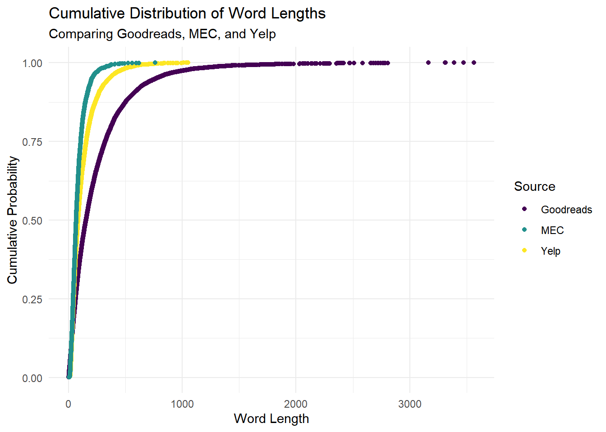
To test for difference, we can confirm do a non-parametric Kolmogorov-Smirnov test to see if the Goodreads and Yelp distributions differ.
# pull the word lengths for goodreads into a vector
grd <- wordcounts_all %>%
filter(source == "goodreads") %>%
pull(n)
# pull the word lengths for yelp into a vector
ypd <- wordcounts_all %>%
filter(source == "yelp") %>%
pull(n)
# run KS test comparing the two vectors
ks.test(grd, ypd)## Warning in ks.test(grd, ypd): p-value will be approximate in the presence of ties##
## Two-sample Kolmogorov-Smirnov test
##
## data: grd and ypd
## D = 0.24968, p-value < 2.2e-16
## alternative hypothesis: two-sidedWe can again reject the null hypothesis that there is no difference between the two distributions. We can hypothesize about why there might be a difference: Goodreads reviewers are writing about books, and so might be expected to be interested in expressing themselves through writing. Yelp reviewers, by and large, are interested in restaurants, and so may not put as much effort into writing full reports.
We might expect the difference in distributions to have an effect on our future modeling, since shorter reviews may contain less information.
4.6 Reviews Over Time
This section looks at how our review datasets change over time, to see how recent reviews are and if there are any trends in volume.
4.6.1 Goodreads
The following chart shows the monthly volume of reviews in the Goodreads dataset.
reviews_gr %>%
mutate(dates = lubridate::ymd(dates) %>% lubridate::floor_date("months")) %>%
group_by(dates) %>%
summarise(n = n()) %>%
ggplot(aes(x=dates,y=n)) +
geom_line() +
theme_minimal() +
labs(title = "Goodreads Reviews: Monthly Volume of New Reviews",
x = "Date",
y = "# of Reviews")## `summarise()` ungrouping output (override with `.groups` argument)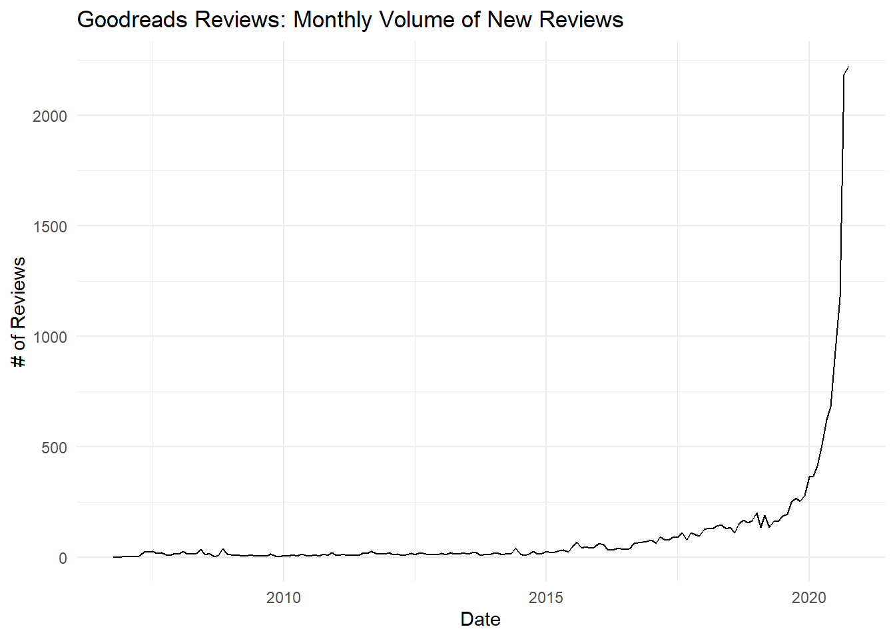
While some reviews date from as far back as 2005, most reviews are from 2020 and the majority are from the past few months. However, it’s unlikely that this distribution represents an actual exponential growth in the number of reviews posted. Instead, recall that I collected reviews for the 100 most-read books in the past week across a few genres. In other words, I collected reviews from books that were being reviewed a lot at that moment in time, so my data collection is heavily biased towards more recent reviews. There may a trend in usage–for example, home-bound readers may be posting more reviews during COVID-19–but we can’t draw any conclusions from this distribution.
4.6.2 Yelp
The following chart shows the monthly volume of reviews in the Yelp dataset.
reviews_yelp %>%
mutate(date = lubridate::mdy(date) %>% lubridate::floor_date("months")) %>%
group_by(date) %>%
summarise(n = n()) %>%
ggplot(aes(x=date,y=n)) +
geom_line() +
theme_minimal() +
labs(title = "Yelp Reviews: Monthly Volume of New Reviews",
x = "Date",
y = "# of Reviews")## `summarise()` ungrouping output (override with `.groups` argument)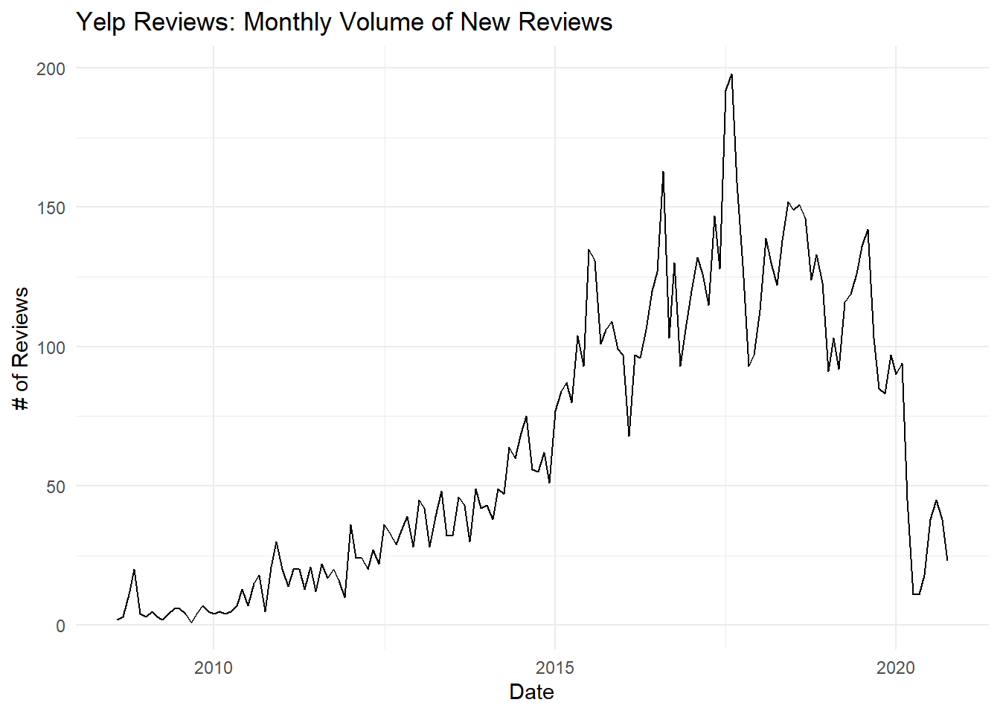
Since I collected all Yelp reviews for restaurants in Ottawa, we can use this dataset to make statements about how review volumes have changed over time. We can see a steep decline in the early months of 2020, coinciding with the start of the COVID-19 pandemic and worldwide lockdowns. However, the volumes also tell an interesting story pre-COVID. From 2010 to 2015 we can see what looks like slow but steady growth, and then after 2015 usage increases dramatically. From 2015-2020 we can see what look like seasonal trends, but it looks like overall volumes stopped growing and may have started declining. In other words, Yelp may have been in trouble before the pandemic hit.
For our purposes, we can be satisfied that our restaurant review dataset spans a long period of time both pre- and post-COVID.
4.6.3 MEC
The following chart shows the monthly volume of reviews in the MEC dataset for each complete month. The data was collected in the first few days of November, so I have left November out.
reviews_mec %>%
mutate(date = lubridate::floor_date(date, "months")) %>%
group_by(date) %>%
summarise(n = n()) %>%
slice_head(n = nrow(.)-1) %>%
ggplot(aes(x=date,y=n)) +
geom_line() +
theme_minimal() +
labs(title = "MEC Reviews: Monthly Volume of New Reviews",
x = "Date",
y = "# of Reviews")## `summarise()` ungrouping output (override with `.groups` argument)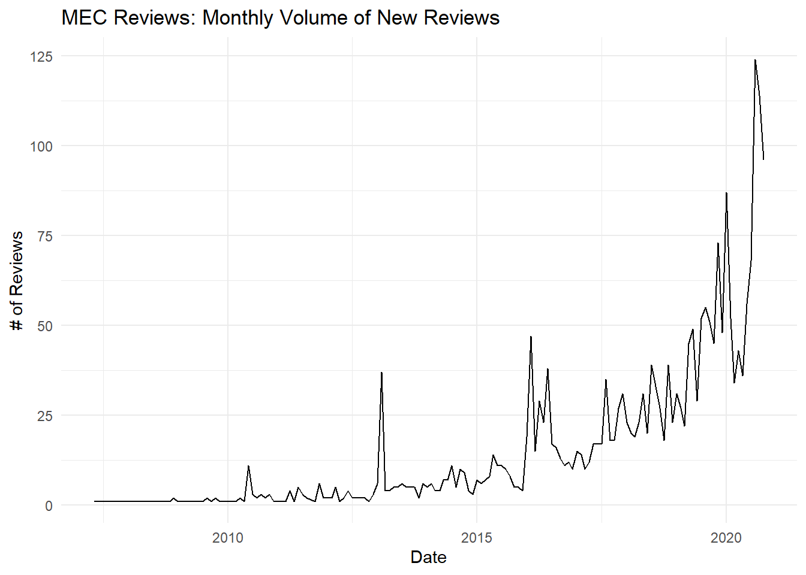
We can expect several biases in the MEC data, so we will need to be cautious about making inferences from this time series. First, I collected MEC data from only a few product categories which may have seasonal trends (e.g. biking in the summer, snowshoeing in the winter). Second, MEC only lists products on its website if they’re currently for sale, so the maximum review age is limited by the longevity of MEC’s product lines. So we should expect to see a decay in review volume as we go further back in time caused by MEC naturally rotating its product line.
That said, we can still see a big dip in early 2020 and then a big spike in summer 2020. This could correspond to a big drop in sales with the COVID lockdown and associated uncertainty, and then a bike spike in outdoor sporting goods as people tried to find socially distanced ways of entertaining themselves over the summer.
Out of curiosity, here are the 10 oldest reviews in our dataset:
## # A tibble: 10 x 3
## date product_name review_title
## <dttm> <chr> <chr>
## 1 2007-05-22 00:00:00 MEC V-Brake Cartridge Brake Pads I need more!!!
## 2 2007-08-12 00:00:00 MEC V-Brake Shoe/Pad Assembly Buy them once, love them forever
## 3 2007-09-05 00:00:00 SRAM PC-971 9 Speed Chain Great value
## 4 2008-02-28 00:00:00 MEC V-Brake Cartridge Brake Pads Decent brake pads
## 5 2008-11-02 00:00:00 MEC V-Brake Shoe/Pad Assembly Great product.
## 6 2008-12-16 00:00:00 MEC V-Brake Shoe/Pad Assembly Best value in a V-brake pad!
## 7 2008-12-18 00:00:00 Zamberlan Vioz GT Gore-Tex Backpacking Boots - Women's Mènent au sommet!
## 8 2009-01-15 00:00:00 SRAM PC-971 9 Speed Chain Decent deal on a higher end chain.
## 9 2009-07-21 18:37:26 SRAM PC-830 8 Speed Chain short life
## 10 2009-08-17 19:44:51 SRAM PC-830 8 Speed Chain Not impressed!Not surprisingly, 9 out of 10 are for standard bicycle components that are more about function than fashion: it seems that MEC and SRAM have been offering the same brake pads and chains for more than 10 years.
And we can take a look at the first review for the Zamberlan boots:
reviews_mec %>%
filter(product_name=="Zamberlan Vioz GT Gore-Tex Backpacking Boots - Women's") %>%
slice_head(n=1) %>%
transmute(date = date,
comment = str_trunc(comment, 150)) ## # A tibble: 1 x 2
## date comment
## <dttm> <chr>
## 1 2015-05-26 20:40:15 I've been using these Zamberlan Viozes for the past 4 years. I've owned 4 pairs in that time and I'm just about to start my 5th. I buy a pair every...These boots seem to have been around for a while (and certainly seem to have committed fans), so we can be confident that these reviews are legit.
4.7 Proposed Next Steps
- Sentiment analysis
- Regression models
- LASSO regression to predict star rating from review text.
- Potential to use minimum review length as a parameter.
- Linear regression to predict star rating from review sentiment.
- LASSO regression to predict star rating from review text.
- Classification models
4.8 SessionInfo
## R version 4.0.2 (2020-06-22)
## Platform: x86_64-w64-mingw32/x64 (64-bit)
## Running under: Windows 10 x64 (build 18363)
##
## Matrix products: default
##
## locale:
## [1] LC_COLLATE=English_Canada.1252 LC_CTYPE=English_Canada.1252 LC_MONETARY=English_Canada.1252 LC_NUMERIC=C LC_TIME=English_Canada.1252
##
## attached base packages:
## [1] stats graphics grDevices utils datasets methods base
##
## other attached packages:
## [1] vip_0.2.2 glmnet_4.0-2 Matrix_1.2-18 ggridges_0.5.2 discrim_0.1.1 tictoc_1.0 textrecipes_0.3.0 lubridate_1.7.9 yardstick_0.0.7 workflows_0.2.0
## [11] tune_0.1.1 rsample_0.0.8 recipes_0.1.13 parsnip_0.1.4 modeldata_0.0.2 infer_0.5.3 dials_0.0.9 scales_1.1.1 broom_0.7.0 tidymodels_0.1.1
## [21] tidytext_0.2.5 forcats_0.5.0 stringr_1.4.0 dplyr_1.0.2 purrr_0.3.4 readr_1.3.1 tidyr_1.1.1 tibble_3.0.3 ggplot2_3.3.2 tidyverse_1.3.0
##
## loaded via a namespace (and not attached):
## [1] colorspace_1.4-1 ellipsis_0.3.1 class_7.3-17 fs_1.5.0 rstudioapi_0.11 listenv_0.8.0 furrr_0.1.0 farver_2.0.3 SnowballC_0.7.0
## [10] prodlim_2019.11.13 fansi_0.4.1 xml2_1.3.2 codetools_0.2-16 splines_4.0.2 knitr_1.29 jsonlite_1.7.0 pROC_1.16.2 packrat_0.5.0
## [19] dbplyr_1.4.4 compiler_4.0.2 httr_1.4.2 backports_1.1.7 assertthat_0.2.1 cli_2.0.2 htmltools_0.5.0 tools_4.0.2 gtable_0.3.0
## [28] glue_1.4.1 naivebayes_0.9.7 rappdirs_0.3.1 Rcpp_1.0.5 cellranger_1.1.0 DiceDesign_1.8-1 vctrs_0.3.2 iterators_1.0.12 timeDate_3043.102
## [37] gower_0.2.2 xfun_0.16 stopwords_2.0 globals_0.13.0 rvest_0.3.6 lifecycle_0.2.0 future_1.19.1 MASS_7.3-51.6 ipred_0.9-9
## [46] hms_0.5.3 parallel_4.0.2 yaml_2.2.1 gridExtra_2.3 rpart_4.1-15 stringi_1.4.6 highr_0.8 tokenizers_0.2.1 foreach_1.5.0
## [55] textdata_0.4.1 lhs_1.0.2 hardhat_0.1.4 shape_1.4.5 lava_1.6.8 rlang_0.4.7 pkgconfig_2.0.3 evaluate_0.14 lattice_0.20-41
## [64] labeling_0.3 tidyselect_1.1.0 plyr_1.8.6 magrittr_1.5 bookdown_0.20 R6_2.4.1 generics_0.0.2 DBI_1.1.0 pillar_1.4.6
## [73] haven_2.3.1 withr_2.2.0 survival_3.1-12 nnet_7.3-14 janeaustenr_0.1.5 modelr_0.1.8 crayon_1.3.4 utf8_1.1.4 rmarkdown_2.3
## [82] usethis_1.6.1 grid_4.0.2 readxl_1.3.1 blob_1.2.1 reprex_0.3.0 digest_0.6.25 webshot_0.5.2 munsell_0.5.0 GPfit_1.0-8
## [91] viridisLite_0.3.0 kableExtra_1.1.0